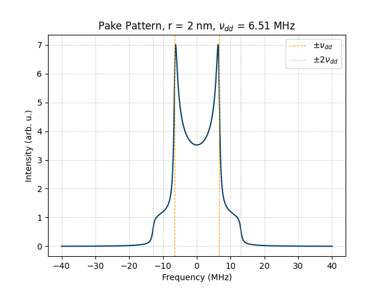
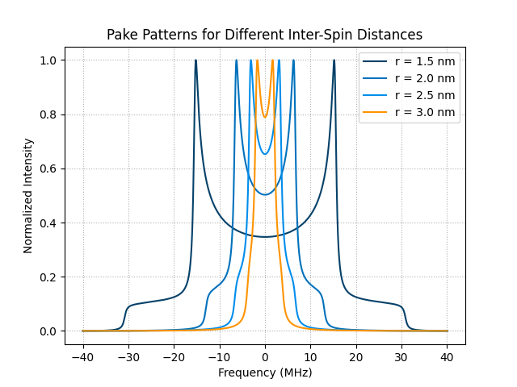

Note
Go to the end to download the full example code.
Pake Pattern Simulation (#9)
This example demonstrates how to simulate a Pake pattern for a dipolar-coupled electron spin pair using the SpinLab theory module. The Pake pattern is the powder-averaged dipolar spectrum observed in DEER/PELDOR experiments. The two characteristic features are the horns at \(\pm\nu_{dd}\) and the shoulders at \(\pm 2\nu_{dd}\).
import spinlab as sl
import numpy as np
from spinlab.plotting.colors import (
BrukerPacific,
BrukerOcean,
BrukerIce,
BrukerOrange,
BrukerDolomite,
BrukerGranite,
)
Define the inter-spin distance and calculate the dipolar coupling frequency. The function uses the DEER convention:
r = 2e-9 # inter-spin distance in meters (2 nm)
nu_dd = sl.distance_to_dipolar_coupling(r, unit="MHz")
print(f"Dipolar coupling: {nu_dd:.3f} MHz")
Dipolar coupling: 6.505 MHz
Set up the frequency axis and the powder-averaging orientations using Gauss-Legendre quadrature on the unit sphere.
freq = np.linspace(-40e6, 40e6, 4096) # frequency axis in Hz — wide enough for all distances
theta, phi, weights = sl.sphere_quadrature(n_theta=500, n_phi=1)
Simulate the Pake pattern. A Lorentzian linewidth of 0.8 MHz is applied via an exponential decay in the time domain before Fourier transformation.
linewidth = 0.8e6 # Hz
spectrum = sl.pake_pattern(freq, theta, nu_dd * 1e6, linewidth, weights)
Plot the result. The horns of the Pake pattern appear at \(\pm\nu_{dd}\) and the shoulders at \(\pm 2\nu_{dd}\).
freq_MHz = freq / 1e6
spectrum = spectrum - spectrum.min() # baseline to zero
sl.plt.figure()
sl.plt.plot(freq_MHz, spectrum, color=BrukerPacific)
sl.plt.axvline(nu_dd, color=BrukerOrange, linestyle="--", linewidth=0.8, label=r"$\pm\nu_{dd}$")
sl.plt.axvline(-nu_dd, color=BrukerOrange, linestyle="--", linewidth=0.8)
sl.plt.axvline(2 * nu_dd, color=BrukerDolomite, linestyle=":", linewidth=0.8, label=r"$\pm 2\nu_{dd}$")
sl.plt.axvline(-2 * nu_dd, color=BrukerDolomite, linestyle=":", linewidth=0.8)
sl.plt.xlabel("Frequency (MHz)")
sl.plt.ylabel("Intensity (arb. u.)")
sl.plt.title(f"Pake Pattern, r = {r*1e9:.0f} nm, $\\nu_{{dd}}$ = {nu_dd:.2f} MHz")
sl.plt.legend()
sl.plt.grid(ls=":")
sl.plt.show()

Distance dependence
The dipolar coupling scales as \(r^{-3}\). The following plot shows Pake patterns for a range of inter-spin distances.
distances_nm = [1.5, 2.0, 2.5, 3.0]
colors = [BrukerPacific, BrukerOcean, BrukerIce, BrukerOrange]
sl.plt.figure()
for r_nm, color in zip(distances_nm, colors):
nu = sl.distance_to_dipolar_coupling(r_nm * 1e-9, unit="MHz")
spec = sl.pake_pattern(freq, theta, nu * 1e6, linewidth, weights)
spec = spec - spec.min() # baseline to zero
spec = spec / spec.max() # normalize peak to 1
sl.plt.plot(freq_MHz, spec, color=color, label=f"r = {r_nm} nm")
sl.plt.xlabel("Frequency (MHz)")
sl.plt.ylabel("Normalized Intensity")
sl.plt.title("Pake Patterns for Different Inter-Spin Distances")
sl.plt.legend()
sl.plt.grid(ls=":")
sl.plt.show()

Total running time of the script: (0 minutes 0.656 seconds)